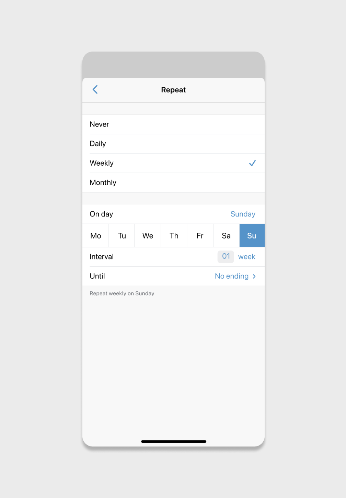

Millions of people are sharing rent and bills on Venmo every day, which led to a lot of repeated payments. This new feature allows users to repeat their payments without doing it all over again everytime—avoiding frustration, financial penalties, and in case of late payments, unfavorable effects on their relationships.
My role in this project includes business research, ideating, UI/UX design, and prototyping.
Venmo (owned by PayPal) is a mobile payment service where users can transfer funds to each other within the U.S. Most Venmo customers are under 34 years old. Specifically, 3.3 million are in the 18-24 age group, while 4.1 million are 25-34.
When we analyzed why people use Venmo, we could see a pattern in paying for Food, Transportation, and Rent/Utilities.
In another question, transactions’ descriptions are analyzed, grouped, and sorted based on frequency. From these two data sets, we can see that “Food/Groceries” and “Rent/Utilities” (highlighted) are among the top three most popular payments on Venmo. Millions of people are sharing rent, utilities, groceries bills repeatedly on Venmo every day.
CURRENT PROBLEM
With how Venmo is set up, current users must go through the same task flow and then duplicate it multiple times. Still, this process doesn't ensure that users remember to pay on time, every time. Late payments result in frustration, cause financial penalties, and affect the relationship with their payees.
To tackle this problem, a new recurring payment feature is required. Specifically, the unmet users' goals are:
• Timely transfer
• Convenience of setting up once
• Feelings of responsibility
• Setting accurate occurences
• Ability to edit, pause, or stop payments
BUSINESS LANDSCAPE
Venmo’s direct competitors, Zelle and Cash App, both do not have recurring payment feature. In addition to meeting users' needs, this new feature will also create a competitive advantage and increase Venmo’s annual payment volume for upcoming years.
SKETCHES
DATA ARCHITECTURE
For simplicity purposes, primary keys and back-end attributes are not shown.
SOLUTION
• Secondary fields are only shown when required
• Alternative text updates as users change their preference
Daily interval: Enter with keypad
Date picker: Calendar view
Weekday picker

Monthly repeat
First time setting up recurring payment
View occurences
How a past recurring payment looks
REFLECTION
Since Venmo doesn't public its design system, I did reverse-engineer a lot the components, mockups, and prototypes shown above. It was a really fun project, although I do get a little dizzy when I look at my own prototypes.
*The case study is curated from my personal opinion, so it is not reflective or affiliated with any mentioned companies. ☺